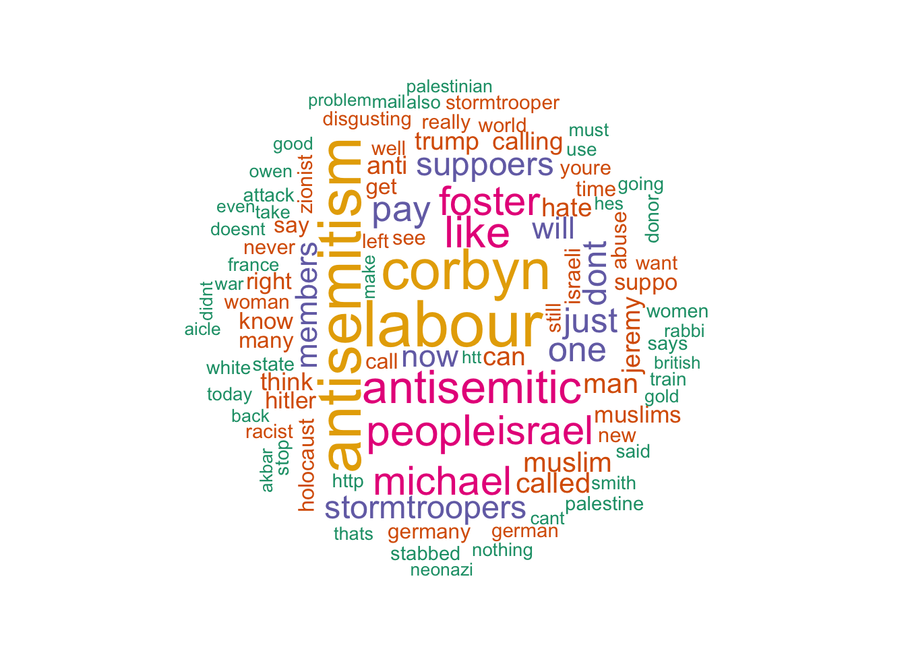

Last updated: 2017-11-03
Code version: 197b066
library(tidyverse)Loading tidyverse: ggplot2
Loading tidyverse: tibble
Loading tidyverse: tidyr
Loading tidyverse: readr
Loading tidyverse: purrr
Loading tidyverse: dplyrWarning: package 'tidyr' was built under R version 3.4.2Warning: package 'purrr' was built under R version 3.4.2Warning: package 'dplyr' was built under R version 3.4.2Conflicts with tidy packages ----------------------------------------------filter(): dplyr, stats
lag(): dplyr, statslibrary(tm)Loading required package: NLP
Attaching package: 'NLP'The following object is masked from 'package:ggplot2':
annotatelibrary(wordcloud)Loading required package: RColorBrewerlibrary(RColorBrewer)
event3 <- read_csv("/Users/sefaozalp/Documents/Work/CST/event_data/event03.csv")Parsed with column specification:
cols(
.default = col_character(),
tweet.id.str = col_double(),
timestamp.str = col_double(),
user.id.str = col_double(),
user.verified = col_logical(),
user.followers = col_integer(),
user.following = col_integer(),
user.status.count = col_integer(),
retweeted.id.str = col_double(),
retweeted.favorite.count = col_integer(),
retweeted.retweet.count = col_integer(),
retweeted.user.id.str = col_double(),
retweeted.user.verified = col_logical(),
retweeted.user.followers = col_integer(),
retweeted.user.following = col_integer(),
retweeted.user.status.count = col_integer(),
quoted.id.str = col_double(),
quoted.favorite.count = col_integer(),
quoted.retweet.count = col_integer(),
quoted.user.id.str = col_double(),
quoted.user.verified = col_logical()
# ... with 27 more columns
)See spec(...) for full column specifications.clean.text = function(x)
{
# tolower
x = tolower(x)
# remove rt
x = gsub("rt", "", x)
# remove at
x = gsub("@\\w+", "", x)
# remove punctuation
x = gsub("[[:punct:]]", "", x)
# remove numbers
x = gsub("[[:digit:]]", "", x)
# remove links http
x = gsub("http\\w+", "", x)
# remove tabs
x = gsub("[ |\t]{2,}", "", x)
# remove blank spaces at the beginning
x = gsub("^ ", "", x)
# remove blank spaces at the end
x = gsub(" $", "", x)
#remove stop words
x= removeWords(x, c(stopwords("english"), "jew", "nazi", "nazis", "jews", "jewish", "amp"))
return(x)
}
event3$tweet.text.str.clean <- event3$tweet.text.str %>% clean.text()
# create corpus
corpus <- Corpus(VectorSource(event3$tweet.text.str.clean))
# create term-document matrix
tdm = TermDocumentMatrix(corpus)
# convert as matrix
# tdm = as.matrix(tdm) crashing
wordcloud(corpus, max.words = 100, random.order = FALSE, random.color = FALSE, rot.per = 0.2,
scale = c(3, 0.5),
colors = brewer.pal(6,"Dark2"))
sessionInfo()R version 3.4.1 (2017-06-30)
Platform: x86_64-apple-darwin15.6.0 (64-bit)
Running under: macOS Sierra 10.12.6
Matrix products: default
BLAS: /Library/Frameworks/R.framework/Versions/3.4/Resources/lib/libRblas.0.dylib
LAPACK: /Library/Frameworks/R.framework/Versions/3.4/Resources/lib/libRlapack.dylib
locale:
[1] en_GB.UTF-8/en_GB.UTF-8/en_GB.UTF-8/C/en_GB.UTF-8/en_GB.UTF-8
attached base packages:
[1] stats graphics grDevices utils datasets methods base
other attached packages:
[1] wordcloud_2.5 RColorBrewer_1.1-2 tm_0.7-1
[4] NLP_0.1-11 dplyr_0.7.4 purrr_0.2.4
[7] readr_1.1.1 tidyr_0.7.2 tibble_1.3.4
[10] ggplot2_2.2.1 tidyverse_1.1.1
loaded via a namespace (and not attached):
[1] Rcpp_0.12.13 cellranger_1.1.0 compiler_3.4.1 git2r_0.19.0
[5] plyr_1.8.4 bindr_0.1 forcats_0.2.0 tools_3.4.1
[9] digest_0.6.12 lubridate_1.6.0 jsonlite_1.5 evaluate_0.10.1
[13] nlme_3.1-131 gtable_0.2.0 lattice_0.20-35 pkgconfig_2.0.1
[17] rlang_0.1.2 psych_1.7.8 yaml_2.1.14 parallel_3.4.1
[21] haven_1.1.0 bindrcpp_0.2 xml2_1.1.1 httr_1.3.1
[25] stringr_1.2.0 knitr_1.17 hms_0.3 rprojroot_1.2
[29] grid_3.4.1 glue_1.1.1 R6_2.2.2 readxl_1.0.0
[33] foreign_0.8-69 rmarkdown_1.6 modelr_0.1.1 reshape2_1.4.2
[37] magrittr_1.5 backports_1.1.1 scales_0.5.0 htmltools_0.3.6
[41] rvest_0.3.2 assertthat_0.2.0 mnormt_1.5-5 colorspace_1.3-2
[45] stringi_1.1.5 lazyeval_0.2.0 munsell_0.4.3 slam_0.1-40
[49] broom_0.4.2 This R Markdown site was created with workflowr